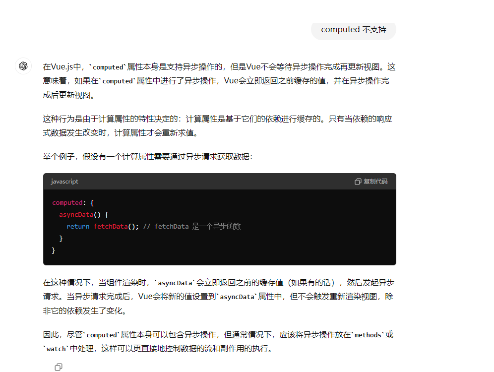
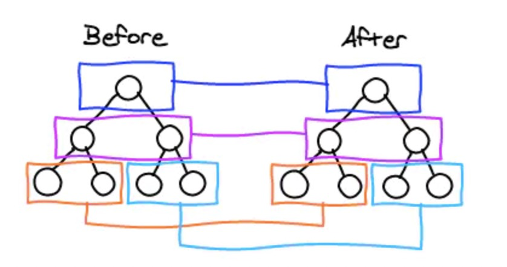

谈一谈对 MVVM 的理解
- MVVM 是 Model-View-ViewModel 的缩写。MVVM 是一种设计思想。
- Model 层代表数据模型，可以在 Model 中定义数据修改和操作的业务逻辑
- View 代表 UI 组件，它负责将数据模型转化成 UI 展现出来
- ViewModel 是一个同步 View 和 Model 的对象
- 在 MVVM 架构下，View 和 Model 之间并没有直接的联系，而是通过 ViewModel 进行交互， Model 和 ViewModel 之间的交互是双向的， 因此 View 数据的变化会同步到 Model 中，而 Model 数据的变化也会立即反应到 View 上。
- 对 ViewModel 通过双向数据绑定把 View 层和 Model 层连接了起来，而 View 和 Model 之间的同步工作完全是自动的，无需人为干涉，因此开发者只需关注业务逻辑，不需要手动操作 DOM，不需要关注数据状态的同步问题，复杂的数据状态维护完全由 MVVM 来统一管理。
说一下 Vue 的优点
Vue 的目标是通过尽可能简单的 API 实现响应的数据绑定和组合的视图组件。核心是一个响应的数据绑定系统。
主要优点有响应式编程、组件化开发、虚拟 DOM
响应式编程
Vue 会自动对页面中某些数据的变化做出响应。这也就是 Vue 最大的优点，通过 MVVM 思想实现数据的双向绑定，让开发者不用再操作 DOM 对象，有更多的时间去思考业务逻辑。
组件化开发
Vue 通过组件，把一个单页应用中的各种模块拆分到一个一个单独的组件（component）中，我们只要先在父级应用中写好各种组件标签（占坑），并且在组件标签中写好要传入组件的参数（就像给函数传入参数一样，这个参数叫做组件的属性），然后再分别写好各种组件的实现（填坑），然后整个应用就算做完了。
组件化开发的优点：提高开发效率、方便重复使用、简化调试步骤、提升整个项目的可维护性、便于协同开发。
**虚拟 ****DOM**
在传统开发中，用 JQuery 或者原生的 JavaScript DOM 操作函数对 DOM 进行频繁操作的时候，浏览器要不停的渲染新的 DOM 树，导致在性能上面的开销特别的高。
而 Virtual DOM 则是虚拟 DOM 的英文，简单来说，他就是一种可以预先通过 JavaScript 进行各种计算，把最终的 DOM 操作计算出来并优化，由于这个 DOM 操作属于预处理操作，并没有真实的操作 DOM，所以叫做虚拟 DOM。最后在计算完毕才真正将 DOM 操作提交，将 DOM 操作变化反映到 DOM 树上。
说一下 vue3.0 是如何变得更快的？
优化 **Diff** 算法
相比 Vue 2，Vue 3 采用了更加优化的渲染策略。去掉不必要的虚拟 DOM 树遍历和属性比较，因为这在更新期间往往会产生最大的性能开销。
这里有三个主要的优化：
- 首先，在 DOM 树级别。在没有动态改变节点结构的模板指令（例如 v-if 和 v-for）的情况下，节点结构保持完全静态。当更新节点时，不再需要递归遍历 DOM 树。所有的动态绑定部分将在一个平面数组中跟踪。这种优化通过将需要执行的树遍历量减少一个数量级来规避虚拟 DOM 的大部分开销。
- 其次，编译器积极地检测模板中的静态节点、子树甚至数据对象，并在生成的代码中将它们提升到渲染函数之外。这样可以避免在每次渲染时重新创建这些对象，从而大大提高内存使用率并减少垃圾回收的频率。
- 第三，在元素级别。编译器还根据需要执行的更新类型，为每个具有动态绑定的元素生成一个优化标志。例如，具有动态类绑定和许多静态属性的元素将收到一个标志，提示只需要进行类检查。运行时将获取这些提示并采用专用的快速路径。
综合起来，这些技术大大改进了渲染更新基准，Vue 3.0 有时占用的 CPU 时间不到 Vue 2 的十分之一。
体积变小
重写后的 Vue 支持了 tree-shaking，像修剪树叶一样把不需要的东西给修剪掉，使 Vue 3.0 的体积更小。
需要的模块才会打入到包里，优化后的 Vue 3.0 的打包体积只有原来的一半（13kb）。哪怕把所有的功能都引入进来也只有 23kb，依然比 Vue 2.x 更小。像 keep-alive、transition 甚至 v-for 等功能都可以按需引入。
并且 Vue 3.0 优化了打包方法，使得打包后的 bundle 的体积也更小。
官方所给出的一份惊艳的数据：打包大小减少 41%，初次渲染快 55%，更新快 133%，内存使用减少 54%。
说一说相比 vue3.x 对比 vue2.x 变化
- 源码组织方式变化：使用 TS 重写
- 支持 Composition API：基于函数的 API，更加灵活组织组件逻辑（vue2 用的是 options api）
- 响应式系统提升：Vue3 中响应式数据原理改成 proxy，可监听动态新增删除属性，以及数组变化
- 编译优化：vue2 通过标记静态根节点优化 diff，Vue3 标记和提升所有静态根节点，diff 的时候只需要对比动态节点内容
- 打包体积优化：移除了一些不常用的 api（inline-template、filter）
- 生命周期的变化：使用 setup 代替了之前的 beforeCreate 和 created
- Vue3 的 template 模板支持多个根标签
- Vuex 状态管理：创建实例的方式改变,Vue2 为 new Store , Vue3 为 createStore
- Route 获取页面实例与路由信息：vue2 通过 this 获取 router 实例，vue3 通过使用 getCurrentInstance/ userRoute 和 userRouter 方法获取当前组件实例
- Props 的使用变化：vue2 通过 this 获取 props 里面的内容，vue3 直接通过 props
- 父子组件传值：vue3 在向父组件传回数据时，如使用的自定义名称，如 backData，则需要在 emits 中定义一下
解释一下对 Vue 生命周期的理解
- 什么是 vue 生命周期
- vue 生命周期的作用是什么
- vue 生命周期有几个阶段
- 第一次页面加载会触发哪几个钩子
- DOM 渲染在哪个周期就已经完成
- 多组件（父子组件）中生命周期的调用顺序说一下
什么是 **vue** 生命周期
生命周期就是一个 vue 实例从创建到销毁的过程。
vue** 生命周期的作用是什么**
在生命周期的过程中会运行着一些叫做生命周期的函数，给予了开发者在不同的生命周期阶段添加业务代码的能力。
其实和回调是一个概念，当系统执行到某处时，检查是否有 hook(钩子)，有的话就会执行回调。
通俗的说，hook 就是在程序运行中，在某个特定的位置，框架的开发者设计好了一个钩子来告诉我们当前程序已经运行到特定的位置了，会触发一个回调函数，并提供给我们，让我们可以在生命周期的特定阶段进行相关业务代码的编写。
vue** 生命周期有几个阶段**
它可以总共分为 8 个阶段：创建前/后, 载入前/后,更新前/后,销毁前/销毁后。
- beforeCreate：是 new Vue( ) 之后触发的第一个钩子，在当前阶段 data、methods、computed 以及 watch 上的数据和方法都不能被访问。
- created：在实例创建完成后发生，当前阶段已经完成了数据观测，也就是可以使用数据，更改数据，在这里更改数据不会触发 updated 函数。可以做一些初始数据的获取，在当前阶段无法与 DOM 进行交互，如果非要想，可以通过 vm.$nextTick 来访问 DOM 。
- beforeMount：发生在挂载之前，在这之前 template 模板已导入渲染函数编译。而当前阶段虚拟 DOM 已经创建完成，即将开始渲染。在此时也可以对数据进行更改，不会触发 updated。
- mounted：在挂载完成后发生，在当前阶段，真实的 DOM 挂载完毕，数据完成双向绑定，可以访问到 DOM 节点，使用 refs 属性对 DOM 进行操作。
- beforeUpdate：发生在更新之前，也就是响应式数据发生更新，虚拟 DOM 重新渲染之前被触发，你可以在当前阶段进行更改数据，不会造成重渲染。
- updated：发生在更新完成之后，当前阶段组件 DOM 已完成更新。要注意的是避免在此期间更改数据，因为这可能会导致无限循环的更新。
- beforeDestroy：发生在实例销毁之前，在当前阶段实例完全可以被使用，我们可以在这时进行善后收尾工作，比如清除计时器。
- destroyed：发生在实例销毁之后，这个时候只剩下了 DOM 空壳。组件已被拆解，数据绑定被卸除，监听被移出，子实例也统统被销毁。
第一次页面加载会触发哪几个钩子
会触发 4 个钩子，分别是：beforeCreate、created、beforeMount、mounted
DOM** 渲染在哪个周期就已经完成**
DOM 渲染是在 mounted 阶段完成，此阶段真实的 DOM 挂载完毕，数据完成双向绑定，可以访问到 DOM 节点。
多组件（父子组件）中生命周期的调用顺序说一下
组件的调用顺序都是先父后子，渲染完成的顺序是先子后父。组件的销毁操作是先父后子，销毁完成的顺序是先子后父。
- 加载渲染过程：父 beforeCreate->父 created->父 beforeMount->子 beforeCreate->子 created->子 beforeMount- >子 mounted->父 mounted
- 子组件更新过程：父 beforeUpdate->子 beforeUpdate->子 updated->父 updated
- 父组件更新过程：父 beforeUpdate -> 父 updated
- 销毁过程：父 beforeDestroy->子 beforeDestroy->子 destroyed->父 destroyed
Vue 实现双向数据绑定原理是什么？（Vue2.x）
采用数据劫持结合发布订阅模式（PubSub 模式）的方式，通过 Object.defineProperty 来劫持各个属性的 setter、getter，在数据变动时发布消息给订阅者，触发相应的监听回调。
当把一个普通 Javascript 对象传给 Vue 实例来作为它的 data 选项时，Vue 将遍历它的属性，用 Object.defineProperty 将它们转为 getter/setter。用户看不到 getter/setter，但是在内部它们让 Vue 追踪依赖，在属性被访问和修改时通知变化。
Vue 的数据双向绑定整合了 Observer，Compile 和 Watcher 三者，通过 Observer 来监听自己的 model 的数据变化，通过 Compile 来解析编译模板指令，最终利用 Watcher 搭起 Observer 和 Compile 之间的通信桥梁，达到数据变化->视图更新，视图交互变化（例如 input 操作）->数据 model 变更的双向绑定效果。
Vue3.x 响应式数据
- Vue3.x 响应式数据原理是什么？
- Proxy 只会代理对象的第一层，那么 Vue3 又是怎样处理这个问题的呢？
- 监测数组的时候可能触发多次 get/set，那么如何防止触发多次呢？
Vue3.x** 响应式数据原理是什么？**
在 Vue 2 中，响应式原理就是使用的 Object.defineProperty 来实现的。但是在 Vue 3.0 中采用了 Proxy，抛弃了 Object.defineProperty 方法。
究其原因，主要是以下几点：
- Object.defineProperty 无法监控到数组下标的变化，导致通过数组下标添加元素，不能实时响应
- Object.defineProperty 只能劫持对象的属性，从而需要对每个对象，每个属性进行遍历，如果，属性值是对象，还需要深度遍历。Proxy 可以劫持整个对象，并返回一个新的对象。
- Object.definedProperty 不支持数组(可以监听数组,不过数组方法无法监听自己重写)，更准确的说是不支持数组的各种 API(所以 Vue 重写了数组方法。
- Proxy 不仅可以代理对象，还可以代理数组。还可以代理动态增加的属性。
- Proxy 有多达 13 种拦截方法
- Proxy 是直接代理劫持整个对象。
Proxy** 只会代理对象的第一层，那么 **Vue3** 又是怎样处理这个问题的呢？**
判断当前 Reflect.get 的返回值是否为 Object，如果是则再通过 reactive 方法做代理， 这样就实现了深度观测。
监测数组的时候可能触发多次 **get/set**，那么如何防止触发多次呢？
我们可以判断 key 是否为当前被代理对象 target 自身属性，也可以判断旧值与新值是否相等，只有满足以上两个条件之一时，才有可能执行 trigger。
v-model 双向绑定的原理是什么？
v-model 本质就是 :value + input 方法的语法糖。可以通过 model 属性的 prop 和 event 属性来进行自定义。原生的 v-model，会根据标签的不同生成不同的事件和属性。
例如：
- text 和 textarea 元素使用 value 属性和 input 事件
- checkbox 和 radio 使用 checked 属性和 change 事件
- select 字段将 value 作为 prop 并将 change 作为事件
以输入框为例，当用户在输入框输入内容时，会触发 input 事件，从而更新 value。而 value 的改变同样会更新视图，这就是 vue 中的双向绑定。双向绑定的原理，其实现思路如下：
首先要对数据进行劫持监听，所以我们需要设置一个监听器 Observer，用来监听所有属性。如果属性发上变化了，就需要告诉订阅者 Watcher 看是否需要更新。
因为订阅者是有很多个，所以我们需要有一个消息订阅器 Dep 来专门收集这些订阅者，然后在监听器 Observer 和订阅者 Watcher 之间进行统一管理的。
接着，我们还需要有一个指令解析器 Compile，对每个节点元素进行扫描和解析，将相关指令对应初始化成一个订阅者 Watcher，并替换模板数据或者绑定相应的函数，此时当订阅者 Watcher 接收到相应属性的变化，就会执行对应的更新函数，从而更新视图。
因此接下去我们执行以下 3 个步骤，实现数据的双向绑定：
- 实现一个监听器 Observer，用来劫持并监听所有属性，如果有变动的，就通知订阅者。
- 实现一个订阅者 Watcher，可以收到属性的变化通知并执行相应的函数，从而更新视图。
- 实现一个解析器 Compile，可以扫描和解析每个节点的相关指令，并根据初始化模板数据以及初始化相应的订阅器。
流程图如下：

vue2.x 和 vuex3.x 渲染器的 diff 算法分别说一下？
简单来说，diff 算法有以下过程
- 同级比较，再比较子节点
- 先判断一方有子节点一方没有子节点的情况(如果新的 children 没有子节点，将旧的子节点移除)
- 比较都有子节点的情况(核心 diff)
- 递归比较子节点
正常 Diff 两个树的时间复杂度是 O(n^3)，但实际情况下我们很少会进行跨层级的移动 DOM，所以 Vue 将 Diff 进行了优化，从 O(n^3) -> O(n)，只有当新旧 children 都为多个子节点时才需要用核心的 Diff 算法进行同层级比较。
Vue2 的核心 Diff 算法采用了双端比较的算法，同时从新旧 children 的两端开始进行比较，借助 key 值找到可复用的节点，再进行相关操作。相比 React 的 Diff 算法，同样情况下可以减少移动节点次数，减少不必要的性能损耗，更加的优雅。
Vue3.x 借鉴了 ivi 算法和 inferno 算法
在创建 VNode 时就确定其类型，以及在 mount/patch 的过程中采用位运算来判断一个 VNode 的类型，在这个基础之上再配合核心的 Diff 算法，使得性能上较 Vue2.x 有了提升。该算法中还运用了动态规划的思想求解最长递归子序列。
说一下 v-if 与 v-show 的区别
共同点：都是动态显示隐藏 DOM 元素
区别点:
- v-if 是动态的向 DOM 树内添加或者删除 DOM 元素；v-show 是通过设置 DOM 元素的 display 样式属性控制显隐
- 编译过程 v-if 切换有一个局部编译/卸载的过程，切换过程中合适地销毁和重建内部的事件监听和子组件；v-show 只是简单的基于 css 切换
- 编译条件 v-if 是惰性的，如果初始条件为假，则什么也不做。只有在条件第一次变为真时才开始局部编译；v-show 是在任何条件下(首次条件是否为真)都被编译，然后被缓存，而且 DOM 元素保留
- 性能消耗 v-if 有更高的切换消耗；v-show 有更高的初始渲染消耗
- 使用场景 v-if 适合条件不大可能改变；v-show 适合频繁切换
keep-alive 相关
- keep-alive 的实现原理是什么
- 与 keep-alive 相关的生命周期函数是什么，什么场景下会进行使用
- keep-alive 的常用属性有哪些
介绍
keep-alive 组件是 vue 的内置组件，用于缓存内部组件实例。这样做的目的在于，keep-alive 内部的组件切回时，不用重新创建组件实例，而直接使用缓存中的实例，一方面能够避免创建组件带来的开销，另一方面可以保留组件的状态。代价就是占用了很多的内存，因为其实这些被缓存的页面都还存在
原理
keep-alive 在内部维护了一个 key 数组和一个缓存对象
// keep-alive 内部的声明周期函数
created () {
this.cache = Object.create(null)
this.keys = []
}
key 数组记录目前缓存的组件 key 值，如果组件没有指定 key 值，则会为其自动生成一个唯一的 key 值
cache 对象以 key 值为键，vnode 为值，用于缓存组件对应的虚拟 DOM
在 keep-alive 的渲染函数中，其基本逻辑是判断当前渲染的 vnode 是否有对应的缓存，如果有，从缓存中读取到对应的组件实例；如果没有则将其缓存。
当缓存数量超过 max 数值时，keep-alive 会移除掉 key 数组的第一个元素。
keep-alive渲染源码
render(){
const slot = this.$slots.default; // 获取默认插槽
const vnode = getFirstComponentChild(slot); // 得到插槽中的第一个组件的vnode
const name = getComponentName(vnode.componentOptions); //获取组件名字
const { cache, keys } = this; // 获取当前的缓存对象和key数组
const key = ...; // 获取组件的key值，若没有，会按照规则自动生成
if (cache[key]) {
// 有缓存
// 重用组件实例
vnode.componentInstance = cache[key].componentInstance
remove(keys, key); // 删除key
// 将key加入到数组末尾，这样是为了保证最近使用的组件在数组中靠后，反之靠前
keys.push(key);
} else {
// 无缓存，进行缓存
cache[key] = vnode
keys.push(key)
if (this.max && keys.length > parseInt(this.max)) {
// 超过最大缓存数量，移除第一个key对应的缓存
pruneCacheEntry(cache, keys[0], keys, this._vnode)
}
}
return vnode;
}
生命周期函数
在其内部所有嵌套的组件都具有两个生命周期钩子函数，分别是 activated 和 deactivated，它们分别在组件激活和失活时触发。第一次 activated 触发是在 mounted 之后
属性
keep-alive 具有 include 和 exclude 属性，通过它们可以控制哪些组件进入缓存。另外它还提供了 max 属性，通过它可以设置最大缓存数，当缓存的实例超过该数时，vue 会移除最久没有使用的组件缓存。
受 keep-alive 的影响，其内部所有嵌套的组件都具有两个生命周期钩子函数，分别是 activated 和 deactivated，它们分别在组件激活和失活时触发。第一次 activated 触发是在 mounted 之后
说一下 Vue 的 computed 的实现原理
当组件实例触发生命周期函数 beforeCreate 后，它会做一系列事情，其中就包括对 computed 的处理。
它会遍历 computed 配置中的所有属性，为每一个属性创建一个 Watcher 对象，并传入一个函数，该函数的本质其实就是 computed 配置中的 getter，这样一来，getter 运行过程中就会收集依赖
但是和渲染函数不同，为计算属性创建的 Watcher 不会立即执行，因为要考虑到该计算属性是否会被渲染函数使用，如果没有使用，就不会得到执行。因此，在创建 Watcher 的时候，它使用了 lazy 配置，lazy 配置可以让 Watcher 不会立即执行。
收到 lazy 的影响，Watcher 内部会保存两个关键属性来实现缓存，一个是 value，一个是 dirty
value 属性用于保存 Watcher 运行的结果，受 lazy 的影响，该值在最开始是 undefined
dirty 属性用于指示当前的 value 是否已经过时了，即是否为脏值，受 lazy 的影响，该值在最开始是 true
Watcher 创建好后，vue 会使用代理模式，将计算属性挂载到组件实例中
当读取计算属性时，vue 检查其对应的 Watcher 是否是脏值，如果是，则运行函数，计算依赖，并得到对应的值，保存在 Watcher 的 value 中，然后设置 dirty 为 false，然后返回。
如果 dirty 为 false，则直接返回 watcher 的 value
巧妙的是，在依赖收集时，被依赖的数据不仅会收集到计算属性的 Watcher，还会收集到组件的 Watcher
当计算属性的依赖变化时，会先触发计算属性的 Watcher 执行，此时，它只需设置 dirty 为 true 即可，不做任何处理。
由于依赖同时会收集到组件的 Watcher，因此组件会重新渲染，而重新渲染时又读取到了计算属性，由于计算属性目前已为 dirty，因此会重新运行 getter 进行运算
而对于计算属性的 setter，则极其简单，当设置计算属性时，直接运行 setter 即可。
说一下 Vue complier 的实现原理是什么样的？
在使用 vue 的时候，我们有两种方式来创建我们的 HTML 页面
第一种情况，也是大多情况下，我们会使用模板 template 的方式，因为这更易读易懂也是官方推荐的方法
第二种情况是使用 render 函数来生成 HTML，它比 template 更接近最终结果。
complier 的主要作用是解析模板，生成渲染模板的 render， 而 render 的作用主要是为了生成 VNode
complier 主要分为 3 大块：
- parse：接受 template 原始模板，按着模板的节点和数据生成对应的 AST
- optimize：遍历 AST 的每一个节点，标记静态节点，这样就知道哪部分不会变化，于是在页面需要更新时，通过 diff 减少去对比这部分 DOM，提升性能
- generate 把前两步生成完善的 AST，组成 render 字符串，然后将 render 字符串通过 new Function 的方式转换成渲染函数
简单说，Vue 的编译过程就是将 template 转化为 render 函数的过程。会经历以下阶段：
- 生成 AST 树
- 优化
- codegen
首先解析模版，生成 AST 语法树(一种用 JavaScript 对象的形式来描述整个模板)。 使用大量的正则表达式对模板进行解析，遇到标签、文本的时候都会执行对应的钩子进行相关处理。
Vue 的数据是响应式的，但其实模板中并不是所有的数据都是响应式的。有一些数据首次渲染后就不会再变化，对应的 DOM 也不会变化。那么优化过程就是深度遍历 AST 树，按照相关条件对树节点进行标记。这些被标记的节点(静态节点)我们就可以跳过对它们的比对，对运行时的模板起到很大的优化作用。
编译的最后一步是将优化后的 AST 树转换为可执行的代码。
说一下 watch 与 computed 的区别是什么？以及他们的使用场景分别是什么？
区别：
- 都是观察数据变化的（相同）
- computed 有缓存，它依赖的值变了才会重新计算，watch 没有；
- watch 支持异步，computed 不支持；
- watch 是一对多（监听某一个值变化，执行对应操作）；computed 是多对一（监听属性依赖于其他属性）
- watch 监听函数接收两个参数，第一个是最新值，第二个是输入之前的值；
watch 的 参数：
- deep：深度监听
- immediate ：组件加载立即触发回调函数执行

说一下 vue 中 computed 和 methods 的区别是什么？
首先从表现形式上面来看， computed 和 methods 的区别大致有下面 4 点：
- 在使用时，computed 当做属性使用，而 methods 则当做方法调用
- computed 可以具有 getter 和 setter，因此可以赋值，而 methods 不行
- computed 无法接收多个参数，而 methods 可以
- computed 具有缓存，而 methods 没有
vue 对 methods 的处理比较简单，只需要遍历 methods 配置中的每个属性，将其对应的函数使用 bind 绑定当前组件实例后复制其引用到组件实例中即可;而 vue 对 computed 的处理会稍微复杂一些。
如何让 CSS 值在当前的组件中起作用
在 vue 文件中的 style 标签上，有一个特殊的属性：scoped。当一个 style 标签拥有 scoped 属性时，它的 CSS 样式就只能作用于当前的组件，也就是说，该样式只能适用于当前组件元素。通过该属性，可以使得组件之间的样式不互相污染。如果一个项目中的所有 style 标签全部加上了 scoped，相当于实现了样式的模块化。
scoped** 的实现原理**
vue 中的 scoped 属性的效果主要通过 PostCSS 转译实现的。PostCSS 给一个组件中的所有 DOM 添加了一个独一无二的动态属性，然后，给 CSS 选择器额外添加一个对应的属性选择器来选择该组件中 DOM，这种做法使得样式只作用于含有该属性的 DOM，即组件内部 DOM。
例如：
转译前
<template>
<div class="example">hi</div>
</template>
<style scoped>
.example {
color: red;
}
</style>
转译后：
<template>
<div class="example" data-v-5558831a>hi</div>
</template>
<style>
.example[data-v-5558831a] {
color: red;
}
</style>
scoped 是如何实现样式穿透的？
首先说一下什么场景下需要 scoped 样式穿透。
在很多项目中，会出现这么一种情况，即：引用了第三方组件，需要在组件中局部修改第三方组件的样式，而又不想去除 scoped 属性造成组件之间的样式污染。此时只能通过特殊的方式，穿透 scoped。
通过:deep
.common-image {
width: 100%;
height: 100%;
:deep(.el-image) {
width: 100%;
height: 100%;
.el-image__wrapper {
width: 100%;
height: 100%;
display: flex;
justify-content: center;
align-items: center;
}
}
}
使用:deep()可以穿透的原理是在内部会创建全局 CSS 规则，但这个全局 css 规则只会在.common-image 之内生效。
Vue 编译器在处理<font style="color:rgb(17, 17, 17);">:deep</font>()选择器时，会生成具有更高特异性的 CSS 规则，这意味着这些规则会优先于其他较为通用的样式规则。
Vue 中的 Key 的作用是什么？
key** 的作用主要是为了高效的更新虚拟 **DOM。另外 vue 中在使用相同标签名元素的过渡切换时，也会使用到 key 属性，其目的也是为了让 vue 可以区分它们，否则 vue 只会替换其内部属性而不会触发过渡效果。
解析：
要解释 key 的作用，不得不先介绍一下虚拟 DOM 的 Diff 算法了。
我们知道，vue 实现了一套虚拟 DOM，使我们可以不直接操作 DOM 元素，只操作数据便可以重新渲染页面。而隐藏在背后的原理便是其高效的 Diff 算法。
vue 的虚拟 DOM 的 Diff 算法其核心有以下两点：
- 两个相同的组件产生类似的 DOM 结构，不同的组件产生不同的 DOM 结构。
- 同一层级的一组节点，他们可以通过唯一的 id 进行区分。
基于以上这两点，使得虚拟 DOM 的 Diff 算法的复杂度从 O(n^3) 降到了 O(n)。

当页面的数据发生变化时，Diff 算法只会比较同一层级的节点：
- 如果节点类型不同，直接干掉前面的节点，再创建并插入新的节点，不会再比较这个节点以后的子节点了。
- 如果节点类型相同，则会重新设置该节点的属性，从而实现节点的更新。
当某一层有很多相同的节点时，也就是列表节点时，Diff 算法的更新过程默认情况下也是遵循以上原则。
比如一下这个情况：

我们希望可以在 B 和 C 之间加一个 F，Diff 算法默认执行起来是这样的：

即把 C 更新成 F，D 更新成 C，E 更新成 D，最后再插入 E
是不是很没有效率？
所以我们需要使用 key 来给每个节点做一个唯一标识，Diff 算法就可以正确的识别此节点，找到正确的位置区插入新的节点。

说一下你对 vue 事件绑定原理的理解？
vue 中的事件绑定是有两种，一种是原生的事件绑定，另一种是组件的事件绑定。
原生的事件绑定在普通元素上是通过 @click 进行绑定
组件上是通过 @click.native 进行绑定，组件中的 nativeOn 是等价于 on 的。组件的事件绑定的 @click 是 vue 中自定义的 on 方法来实现的，必须有 emit 才可以触发。
原生事件绑定原理
在 runtime 下的 patch.js 中 createPatchFunction 执行了之后再赋值给 patch。
createPatchFunction 方法有两个参数，分别是 nodeOps 存放操作 dom 节点的方法和 modules，modules 是有两个数组拼接起来的，modules 拼接完的数组中有一个元素就是 events，事件添加就发生在这里。
events 元素关联的就是 events.js 文件，在 events 中有一个 updateDOMListeners 方法，在 events 文件的结尾导出了一个对象，然后对象有一个属性叫做 create，这个属性关联的就是 updateDOMListeners 方法。
在执行 createPatchFunction 方法时，就会将这两个参数传入，在 createPatchFunction 方法中接收了一个参数 backend，在该方法中一开始进行 backend 的解构，就是上面的 nodeOps 和 modules 参数，解构完之后进入 for 循环。
在 createPatchFunction 开头定义了一个 cbs 对象。for 循环遍历一个叫 hooks 的数组。hooks 是文件一开头定义的一个数组，其中包括有 create，for 循环就是在 cbs 上定义一系列和 hooks 元素相同的属性，然后键值是一个数组，然后数组内容是 modules 里面的一些内容。这时就把 events 文件中导出来的 create 属性放在了 cbs 上。
当我们进入首次渲染的时候，会执行到 patch 函数里面的 createElm 方法，这个方法中就会调用 invokeCreateHooks 函数，用来处理事件系统，这里就是真正准备进行原生事件绑定的入口。invokeCreateHooks 方法中，遍历了 cbs.create 数组里面的内容。然后把 cbs.create 里面的函数全部都执行一次，在 cbs.create 其中一个函数就是 updateDOMListeners。
updateDOMListeners 就是用来添加事件的方法，在这方法中会根据 vnode 判断是否有定义一个点击事件。如果没有点击事件就 return。有的话就继续执行，给 on 进行赋值，然后进行一些赋值操作，将 vnode.elm 赋值给 target，elm 这个属性就是指向 vnode 所对应的真实 dom 节点，这里就是把我们要绑定事件的 dom 结点进行缓存，接下来执行 updateListeners 方法。在接下来执行 updateListeners 方法中调用了一个 add 的方法，然后在 app 方法中通过原生 addEventListener 把事件绑定到 dom 上。
组件事件绑定原理
在组件实例初始化会调用 initMixin 方法中的 Vue.prototype._init，在 init 函数中，会通过 initInternalComponent 方法初始化组件信息，将自定义的组件事件放到_parentListeners 上，下来就会调用 initEvents 来初始化组件事件，在 initEvents 中会实例上添加一个 _event 对象，用于保存自定义事件，然后获取到 父组件给 子组件绑定的自定义事件，也就是刚才在初始化组件信息的时候将自定义的组件事件放在了_parentListeners 上，这时候 vm.$options._parentListeners 就是自定义的事件。
最后进行判断，如果有自定义的组件事件就执行 updateComponentListeners 方法进行事件绑定，在 updateComponentListeners 方法中会调用 updateListeners 方法，并传传一个 add 方法进行执行，这个 add 方法里就是$on 方法。
插槽与作用域插槽的区别是什么？
插槽的作用是子组件提供了可替换模板，父组件可以更换模板的内容。
作用域插槽给了子组件将数据返给父组件的能力，子组件一样可以复用，同时父组件也可以重新组织内容和样式。
如何监听 pushstate 和 replacestate 的变化呢？
History.replaceState 和 History.pushState 不会触发 popstate 事件，所以我们可以通过在方法中创建一个新的全局事件来实现 pushstate 和 replacestate 变化的监听。
具体做法为：
var _wr = function(type) {
var orig = history[type];
return function() {
var rv = orig.apply(this, arguments);
var e = new Event(type);
e.arguments = arguments;
window.dispatchEvent(e);
return rv;
};
};
history.pushState = _wr('pushState');
history.replaceState = _wr('replaceState');
这样就创建了 2 个全新的事件，事件名为 pushState 和 replaceState，我们就可以在全局监听：
window.addEventListener('replaceState', function(e) {
console.log('THEY DID IT AGAIN! replaceState 111111');
});
window.addEventListener('pushState', function(e) {
console.log('THEY DID IT AGAIN! pushState 2222222');
});
这样就可以监听到 pushState 和 replaceState 行为。
vue 的数据为什么频繁变化但只会更新一次？
这是因为 vue 的 DOM 更新是一个异步操作，在数据更新后会首先被 set 钩子监听到，但是不会马上执行 DOM 更新，而是在下一轮循环中执行更新。
具体实现是 vue 中实现了一个 queue 队列用于存放本次事件循环中的所有 watcher 更新，并且同一个 watcher 的更新只会被推入队列一次，并在本轮事件循环的微任务执行结束后执行此更新(UI Render 阶段)，这就是 DOM 只会更新一次的原因。
这种在缓冲时去除重复数据对于避免不必要的计算和 DOM 操作是非常重要的。然后，在下一个的事件循环“tick”中，vue 刷新队列并执行实际 (已去重的) 工作。
vue 在内部对异步队列尝试使用原生的 Promise.then、MutationObserver 和 setImmediate，如果执行环境不支持，则会采用 setTimeout(fn, 0) 代替。
nextTick 的作用是什么？他的实现原理是什么？
作用：vue 更新 DOM 是异步更新的，数据变化，DOM 的更新不会马上完成，nextTick 的回调是在下次 DOM 更新循环结束之后执行的延迟回调。
实现原理：nextTick 主要使用了宏任务和微任务。根据执行环境分别尝试采用
- Promise：可以将函数延迟到当前函数调用栈最末端
- MutationObserver ：是 H5 新加的一个功能，其功能是监听 DOM 节点的变动，在所有 DOM 变动完成后，执行回调函数
- setImmediate：用于中断长时间运行的操作，并在浏览器完成其他操作（如事件和显示更新）后立即运行回调函数
- 如果以上都不行则采用 setTimeout 把函数延迟到 DOM 更新之后再使用
原因是宏任务消耗大于微任务，优先使用微任务，最后使用消耗最大的宏任务。
vue 为什么采用异步渲染
因为如果不采用异步更新，那么每次更新数据都会对当前组件进行重新渲染；所以为了性能考虑，Vue 会在本轮数据更新后，再去异步更新视图。
异步渲染的原理：
- 调用 notify( ) 方法，通知 watcher 进行更新操作
- 依次调用 watcher 的 update 方法
- 对 watcher 进行去重操作（通过 id）放到队列里
- 执行完后异步清空这个队列，nextTick（flushSchedulerQueue）进行批量更新操作
组件中写 name 选项有哪些好处
- 可以通过名字找到对应的组件（递归组件：组件自身调用自身）
- 可以通过 name 属性实现缓存功能（keep-alive）
- 可以通过 name 来识别组件（跨级组件通信时非常重要）
- 使用 vue-devtools 调试工具里显示的组见名称是由 vue 中组件 name 决定的
使用
vue 组件的参数传递
父组件与子组件传值实现过程
- 父组件传给子组件：子组件通过 props 方法接受数据
- 子组件传给父组件：使用自定义事件，组件通过 emit 方法触发父组件的方法来传递参数
总结 vue 中的组件通信方式，常见使用场景可以分为三类：
- 父子通信：
- 父向子传递数据是通过 props ，子向父是通过 emit / on(v-model)
- pinia
- ref 也可以访问组件实例
- 兄弟通信：
- pinia
- 跨级通信：
- provide / inject
- pinia
v-on 可以实现监听多个方法么？
可以监听多个方法。关于监听多个方法提供了几种不同的写法：
写法一：
<div v-on="{ 事件类型: 事件处理函数, 事件类型: 事件处理函数 }"></div>
写法二：
<div @事件类型="“事件处理函数”" @事件类型="“事件处理函数”"></div>
写法三：在一个事件里面书写多个事件处理函数
<div @事件类型="“事件处理函数1，事件处理函数2”"></div>
写法四：在事件处理函数内部调用其他的函数
说一下你知道的 vue 修饰符都有哪些？
在 vue 中修饰符可以分为 3 类：
- 事件修饰符
- 按键修饰符
- 表单修饰符
事件修饰符
在事件处理程序中调用 event.preventDefault 或 event.stopPropagation 方法是非常常见的需求。尽管可以在 methods 中轻松实现这点，但更好的方式是：methods 只有纯粹的数据逻辑，而不是去处理 DOM 事件细节。
为了解决这个问题，vue 为 v-on 提供了事件修饰符。通过由点 . 表示的指令后缀来调用修饰符。
常见的事件修饰符如下：
- .stop：阻止冒泡。
- .prevent：阻止默认事件。
- .capture：使用事件捕获模式。
- .self：只在当前元素本身触发。
- .once：只触发一次。
- .passive：默认行为将会立即触发。
按键修饰符
除了事件修饰符以外，在 vue 中还提供了有鼠标修饰符，键值修饰符，系统修饰符等功能。
- .left：左键
- .right：右键
- .middle：滚轮
- .enter：回车
- .tab：制表键
- .delete：捕获 “删除” 和 “退格” 键
- .esc：返回
- .space：空格
- .up：上
- .down：下
- .left：左
- .right：右
- .ctrl：ctrl 键
- .alt：alt 键
- .shift：shift 键
- .meta：meta 键
表单修饰符
vue 同样也为表单控件也提供了修饰符，常见的有 .lazy、.number 和 .trim。
- .lazy：在文本框失去焦点时才会渲染
- .number：将文本框中所输入的内容转换为 number 类型
- .trim：可以自动过滤输入首尾的空格
说一说自定义指令有哪些生命周期？
vue2 的自定义指令钩子函数
自定义指令的生命周期，有 5 个事件钩子，可以设置指令在某一个事件发生时的具体行为：
- bind: 只调用一次，指令第一次绑定到元素时调用，用这个钩子函数可以定义一个在绑定时执行一次的初始化动作。
- inserted: 被绑定元素插入父节点时调用（父节点存在即可调用，不必存在于 document 中）。
- update: 被绑定元素所在的模板更新时调用，而不论绑定值是否变化。通过比较更新前后的绑定值，可以忽略不必要的模板更新（详细的钩子函数参数见下）。
- componentUpdated: 被绑定元素所在模板完成一次更新周期时调用。
- unbind: 只调用一次， 指令与元素解绑时调用。
vue3 的自定义指令钩子函数
beforeMount
mounted
beforeUpdate
updated
beforeUnmount
钩子函数的参数 (包括 el，binding，vnode，oldVnode)
- el: 指令所绑定的元素，可以用来直接操作 DOM 。
- binding: 一个对象，包含以下属性：name: 指令名、value: 指令的绑定值、oldValue: 指令绑定的前一个值、expression: 绑定值的字符串形式、arg: 传给指令的参数、modifiers: 一个包含修饰符的对象。
- vnode: Vue 编译生成的虚拟节点。
- oldVnode: 上一个虚拟节点，仅在 update 和 componentUpdated 钩子中可用。
优化
如何实现 vue 项目中的性能优化？
编码阶段
- 尽量减少 data 中的数据，data 中的数据都会增加 getter 和 setter，会收集对应的 watcher
- v-if 和 v-for 不能连用
- 如果需要使用 v-for 给每项元素绑定事件时使用事件代理
- SPA 页面采用 keep-alive 缓存组件
- 在更多的情况下，使用 v-if 替代 v-show
- key 保证唯一
- 使用路由懒加载、异步组件
- 防抖、节流
- 第三方模块按需导入
- 长列表滚动到可视区域动态加载
- 图片懒加载
SEO** 优化**
- 预渲染
- 服务端渲染 SSR
打包优化
- 压缩代码
- Tree Shaking/Scope Hoisting
- 使用 cdn 加载第三方模块
- 多线程打包 happypack
- splitChunks 抽离公共文件
- sourceMap 优化
用户体验
- 骨架屏
- PWA
还可以使用缓存(客户端缓存、服务端缓存)优化、服务端开启 gzip 压缩等。
vue 中的 spa 应用如何优化首屏加载速度?
优化首屏加载可以从这几个方面开始：
- 请求优化：CDN 将第三方的类库放到 CDN 上，能够大幅度减少生产环境中的项目体积，另外 CDN 能够实时地根据网络流量和各节点的连接、负载状况以及到用户的距离和响应时间等综合信息将用户的请求重新导向离用户最近的服务节点上。
- 缓存：将长时间不会改变的第三方类库或者静态资源设置为强缓存，将 max-age 设置为一个非常长的时间，再将访问路径加上哈希达到哈希值变了以后保证获取到最新资源，好的缓存策略有助于减轻服务器的压力，并且显著的提升用户的体验
- gzip：开启 gzip 压缩，通常开启 gzip 压缩能够有效的缩小传输资源的大小。
- http2：如果系统首屏同一时间需要加载的静态资源非常多，但是浏览器对同域名的 tcp 连接数量是有限制的(chrome 为 6 个)超过规定数量的 tcp 连接，则必须要等到之前的请求收到响应后才能继续发送，而 http2 则可以在多个 tcp 连接中并发多个请求没有限制，在一些网络较差的环境开启 http2 性能提升尤为明显。
- 懒加载：当 url 匹配到相应的路径时，通过 import 动态加载页面组件，这样首屏的代码量会大幅减少，webpack 会把动态加载的页面组件分离成单独的一个 chunk.js 文件
- 预渲染：由于浏览器在渲染出页面之前，需要先加载和解析相应的 html、css 和 js 文件，为此会有一段白屏的时间，可以添加 loading，或者骨架屏幕尽可能的减少白屏对用户的影响体积优化
- 合理使用第三方库：对于一些第三方 ui 框架、类库，尽量使用按需加载，减少打包体积
- 使用可视化工具分析打包后的模块体积：webpack-bundle- analyzer 这个插件在每次打包后能够更加直观的分析打包后模块的体积，再对其中比较大的模块进行优化
- 提高代码使用率：利用代码分割，将脚本中无需立即调用的代码在代码构建时转变为异步加载的过程
- 封装：构建良好的项目架构，按照项目需求就行全局组件，插件，过滤器，指令，utils 等做一 些公共封装，可以有效减少我们的代码量，而且更容易维护资源优化
- 图片懒加载：使用图片懒加载可以优化同一时间减少 http 请求开销，避免显示图片导致的画面抖动，提高用户体验
- 使用 svg 图标：相对于用一张图片来表示图标，svg 拥有更好的图片质量，体积更小，并且不需要开启额外的 http 请求
- 压缩图片：可以使用 image-webpack-loader，在用户肉眼分辨不清的情况下一定程度上压缩图片
路由
Vue 的路由实现
- 解释 hash 模式和 history 模式的实现原理
- 说一下 router 与 route 的区别
- vueRouter 有哪几种导航守卫？
- 解释一下 vueRouter 的完整的导航解析流程是什么
解释 **hash** 模式和 **history** 模式的实现原理
后面 hash 值的变化，不会导致浏览器向服务器发出请求，浏览器不发出请求，就不会刷新页面；通过监听 hashchange 事件可以知道 hash 发生了哪些变化，然后根据 hash 变化来实现更新页面部分内容的操作。
history 模式的实现，主要是 HTML5 标准发布的两个 API，pushState 和 replaceState，这两个 API 可以在改变 URL，但是不会发送请求。这样就可以监听 url 变化来实现更新页面部分内容的操作。
两种模式的区别：
- 首先是在 URL 的展示上，hash 模式有“#”，history 模式没有
- 刷新页面时，hash 模式可以正常加载到 hash 值对应的页面，而 history 没有处理的话，会返回 404，一般需要后端将所有页面都配置重定向到首页路由
- 在兼容性上，hash 可以支持低版本浏览器和 IE
说一下 router 与 route 的区别
route 对象表示当前的路由信息，包含了当前 URL 解析得到的信息。包含当前的路径，参数，query 对象等。
- route.path：字符串，对应当前路由的路径，总是解析为绝对路径，如 “/foo/bar”。
- route.params： 一个 key/value 对象，包含了 动态片段 和 全匹配片段，如果没有路由参数，就是一个空对象。
- route.query：一个 key/value 对象，表示 URL 查询参数。例如对于路径 /foo?user=1，则有 route.query.user == 1，如果没有查询参数，则是个空对象。
- route.hash：当前路由的 hash 值 (不带 #) ，如果没有 hash 值，则为空字符串。
- route.fullPath：完成解析后的 URL，包含查询参数和 hash 的完整路径。
- route.matched：数组，包含当前匹配的路径中所包含的所有片段所对应的配置参数对象。
- route.name：当前路径名字
- route.meta：路由元信息
route 对象出现在多个地方:
- 组件内的 this.route 和 route watcher 回调（监测变化处理）
- router.match(location) 的返回值
- scrollBehavior 方法的参数
- 导航钩子的参数，例如 router.beforeEach 导航守卫的钩子函数中，to 和 from 都是这个路由信息对象。
router 对象是全局路由的实例，是 router 构造方法的实例。
router 对象常用的方法有：
- push：向 history 栈添加一个新的记录
- go：页面路由跳转前进或者后退
- replace：替换当前的页面，不会向 history 栈添加一个新的记录
vueRouter** 有哪几种导航守卫？**
- 全局前置/钩子：beforeEach、before-resolve、afterEach
- 路由独享的守卫：beforeEnter
- 组件内的守卫：beforeRouteEnter、beforeRouteUpdate、beforeRouteLeave
解释一下 **vueRouter** 的完整的导航解析流程是什么
一次完整的导航解析流程如下：
- 导航被触发。
- 在失活的组件里调用离开守卫。
- 调用全局的 beforeEach 守卫。
- 在重用的组件里调用 beforeRouteUpdate 守卫。
- 在路由配置里调用 beforeEnter。
- 解析异步路由组件。
- 在被激活的组件里调用 beforeRouteEnter。
- 调用全局的 beforeResolve 守卫。
- 导航被确认。
- 调用全局的 afterEach 钩子。
- 触发 DOM 更新。
- 用创建好的实例调用 beforeRouteEnter 守卫中传给 next 的回调函数。
vue2.x
vue 中相同逻辑如何进行抽离？
可以使用 vue 里面的混入（mixin）技术。混入（mixin）提供了一种非常灵活的方式，来将 vue 中相同的业务逻辑进行抽离。
例如：
- 在 data 中有很多是公用数据
- 引用封装好的组件也都是一样的
- methods、watch、computed 中也都有大量的重复代码
当然这个时候可以将所有的代码重复去写来实现功能，但是我们并不不推荐使用这种方式，无论是工作量、工作效率和后期维护来说都是不建议的，这个时候 mixin 就可以大展身手了。
一个混入对象可以包含任意组件选项。当组件使用混入对象时，所有混入对象的选项将被“混合”进入该组件本身的选项。说白了就是给每个生命周期，函数等等中间加入一些公共逻辑。
混入技术特点
- 当组件和混入对象含有同名选项时，这些选项将以恰当的方式进行“合并”。比如，数据对象在内部会进行递归合并，并在发生冲突时以组件数据优先。
- 同名钩子函数将合并为一个数组，因此都将被调用。另外，混入对象的钩子将在组件自身钩子之前调用。
- 值为对象的选项，例如 methods、components 和 directives，将被合并为同一个对象。两个对象键名冲突时，取组件对象的键值对。
说一下在 Vue2.x 中如何检测数组的变化？
Vue2.x 中实现检测数组变化的方法，是将数组的常用方法进行了重写。Vue 将 data 中的数组进行了原型链重写，指向了自己定义的数组原型方法。这样当调用数组 api 时，可以通知依赖更新。如果数组中包含着引用类型，会对数组中的引用类型再次递归遍历进行监控。这样就实现了监测数组变化。
流程:
- 初始化传入 data 数据执行 initData
- 将数据进行观测 new Observer
- 将数组原型方法指向重写的原型
- 深度观察数组中的引用类型
有两种情况无法检测到数组的变化。
- 当利用索引直接设置一个数组项时，例如 vm.items[indexOfItem] = newValue
- 当修改数组的长度时，例如 vm.items.length = newLength
不过这两种场景都有对应的解决方案。
利用索引设置数组项的替代方案
//使用该方法进行更新视图
// vm.$set，Vue.set的一个别名
vm.$set(vm.items, indexOfItem, newValue)
修改数组的长度的替代方案
//使用该方法进行更新视图
// Array.prototype.splice
vm.items.splice(indexOfItem, 1, newValue)
vuex 是什么？怎么使用它？什么场景下我们会使用到 vuex
vuex 是什么
vuex 是一个专为 Vue 应用程序开发的状态管理器，采用集中式存储管理应用的所有组件的状态。每一个 vuex 应用的核心就是 store（仓库）。“store” 基本上就是一个容器，它包含着应用中大部分的状态 (state)。
**为什么需要 ****vuex**
由于组件只维护自身的状态(data)，组件创建时或者路由切换时，组件会被初始化，从而导致 data 也随之销毁。
使用方法
在 main.js 引入 store，注入。只用来读取的状态集中放在 store 中， 改变状态的方式是提交 mutations，这是个同步的事物，异步逻辑应该封装在 action 中。
**什么场景下会使用到 ****vuex**
如果是 vue 的小型应用，那么没有必要使用 vuex，这个时候使用 vuex 反而会带来负担。组件之间的状态传递使用 props、自定义事件来传递即可。
但是如果涉及到 vue 的大型应用，那么就需要类似于 vuex 这样的集中管理状态的状态机来管理所有组件的状态。例如登录状态、加入购物车、音乐播放等，总之只要是开发 vue 的大型应用，都推荐使用 vuex 来管理所有组件状态。
Vue 组件的 data 为什么必须是函数
组件中的 data 写成一个函数，数据以函数返回值形式定义。这样每复用一次组件，就会返回一份新的 data，类似于给每个组件实例创建一个私有的数据空间，让各个组件实例维护各自的数据。而单纯的写成对象形式，就使得所有组件实例共用了一份 data，就会造成一个变了全都会变的结果。
Vue 中如何进行组件的使用？Vue 如何实现全局组件的注册？
要使用组件，首先需要使用 import 来引入组件，然后在 components 属性中注册组件，之后就可以在模板中使用组件了。
可以使用 Vue.component 方法来实现全局组件的注册。
你的接口请求一般放在哪个生命周期中？为什么要这样做？
接口请求可以放在钩子函数 created、beforeMount、mounted 中进行调用，因为在这三个钩子函数中，data 已经创建，可以将服务端端返回的数据进行赋值。
但是推荐在 created 钩子函数中调用异步请求，因为在 created 钩子函数中调用异步请求有以下优点：
- 能更快获取到服务端数据，减少页面 loading 时间
- SSR 不支持 beforeMount 、mounted 钩子函数，所以放在 created 中有助于代码的一致性
- created 是在模板渲染成 html 前调用，即通常初始化某些属性值，然后再渲染成视图。如果在 mounted 钩子函数中请求数据可能导致页面闪屏问题
其他
说一下 Vue SSR 的实现原理
- app.js 作为客户端与服务端的公用入口，导出 Vue 根实例，供客户端 entry 与服务端 entry 使用。客户端 entry 主要作用挂载到 DOM 上，服务端 entry 除了创建和返回实例，还需要进行路由匹配与数据预获取。
- webpack 为客服端打包一个 ClientBundle，为服务端打包一个 ServerBundle。
- 服务器接收请求时，会根据 url，加载相应组件，获取和解析异步数据，创建一个读取 Server Bundle 的 BundleRenderer，然后生成 html 发送给客户端。
- 客户端混合，客户端收到从服务端传来的 DOM 与自己的生成的 DOM 进行对比，把不相同的 DOM 激活，使其可以能够响应后续变化，这个过程称为客户端激活（也就是转换为单页应用）。为确保混合成功，客户 端与服务器端需要共享同一套数据。在服务端，可以在渲染之前获取数据，填充到 store 里，这样，在客户端挂载到 DOM 之前，可以直接从 store 里取数据。首屏的动态数据通过 window.INITIAL_STATE 发送到客户端
- VueSSR 的原理，主要就是通过 vue-server-renderer 把 Vue 的组件输出成一个完整 HTML，输出到客户端，到达客户端后重新展开为一个单页应用。
vue 如何快速定位那个组件出现性能问题的
⽤ timeline ⼯具。 通过 timeline 来查看每个函数的调⽤时常，定位出哪个函数的问题，从⽽能判断哪个组件出了问题。
既然 Vue 通过数据劫持可以精准探测数据变化，为什么还需要虚拟 DOM 进行 diff 监测差异 ？
现代前端框架有两种方式侦测变化，一种是 pull，一种是 push。
pull
其代表为 React，我们可以回忆一下 React 是如何侦测到变化的。
我们通常会用 setState API 显式更新,然后 React 会进行一层层的 Virtual Dom Diff 操作找出差异，然后 Patch 到 DOM 上，React 从一开始就不知道到底是哪发生了变化,只是知道「有变化了」,然后再进行比较暴力的 Diff 操作查找「哪发生变化了」，另外一个代表就是 Angular 的脏检查操作。
push
Vue 的响应式系统则是 push 的代表，当 Vue 程序初始化的时候就会对数据 data 进行依赖的收集，一但数据发生变化，响应式系统就会立刻得知，因此 Vue 是一开始就知道是「在哪发生变化了」
但是这又会产生一个问题，通常绑定一个数据就需要一个 Watcher，一但我们的绑定细粒度过高就会产生大量的 Watcher，这会带来内存以及依赖追踪的开销，而细粒度过低会无法精准侦测变化，因此 Vue 的设计是选择中等细粒度的方案，在组件级别进行 push 侦测的方式，也就是那套响应式系统。
通常我们会第一时间侦测到发生变化的组件,然后在组件内部进行 Virtual Dom Diff 获取更加具体的差异，而 Virtual Dom Diff 则是 pull 操作，Vue 是 push + pull 结合的方式进行变化侦测的。